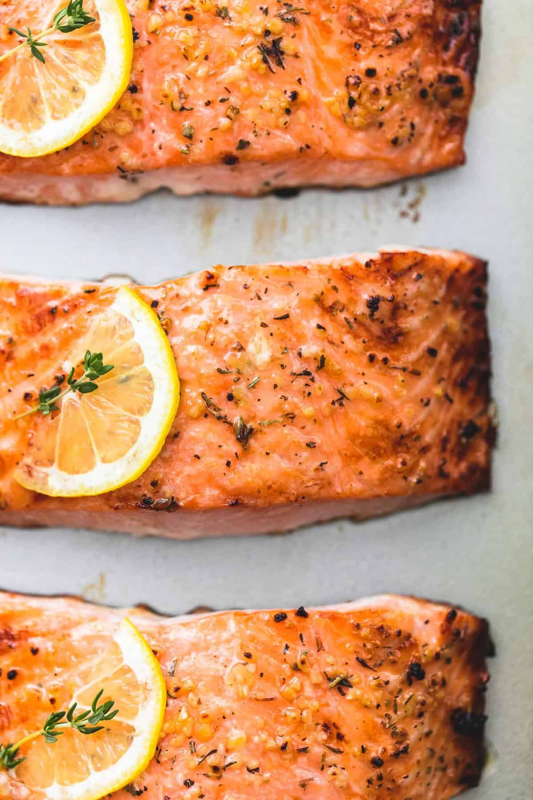

Oven Baked Salmon

Easy Healthy Baked Salmon.
Heat the oven to 425 °F degrees.
4salmon fillets - about 6 ounces each2 tbspolive oil- salt and pepper
2 tspminced garlic1 tspitalian seasoning blend1medium lemon- chili lime (optional)
- butter (optional)
Arrange salmon fillets on a baking sheet and season generously with salt, pepper, and chili lime.
Stir together olive oil, garlic, herbs, and juice of ½ lemon. Spoon over salmon fillets being sure to rub all over the tops and sides of the salmon so it has no dry spots. Thinly slice remaining ½ of lemon and top each piece of salmon with a slice of lemon and a piece of butter on top.
Bake for 12 minutes until salmon is opaque and flaky when pulled apart with a fork (125–130°F / 52–54°C in the thickest part for medium). Tip: 350 °F for 18-20 minutes, lower and longer makes it softer inside while still nice a crispy texture outside.